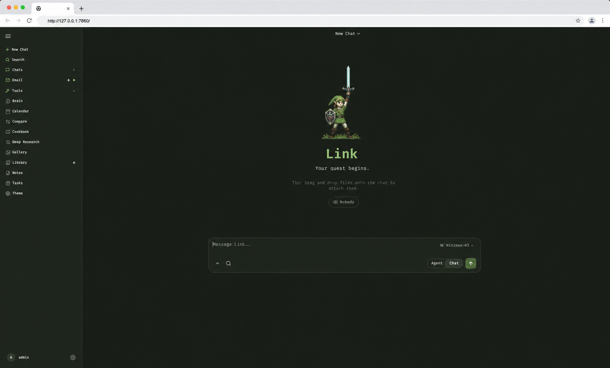

Bewerbung · HR Tech Consulting
Marco Grotemeyer
Consultant HR-Software, HR-Prozesse & KI in HR (m/w/d)
LinkedInDas kann ich — und hier ist der Beweis
Vier Projekte, die meine HR- und KI-Kompetenz direkt belegen
Marco Conversational AI
Passwort-geschützter KI-Chatbot mit Voice-Mode — live testbar. Spricht mit dir wie Marco selbst: direkt, humorvoll, mit Bedarfsanalyse vor jeder Antwort.
Conversational AI
Voice Agents
Prompt Engineering
HR Workflow Automation
Drei produktive n8n-Workflows aus dem KI-Funnel — übertragbar auf HR-Prozesse. Trigger, Verarbeitung, Output.
Workflow-Automation
HR-Software
DSGVO & Compliance
AI Agentic Workspace
Lokales LLM-Setup mit eigenem Systemprompt, Memory-File und OpenCode-Integration — technische Tiefe für KI-Implementierung.

Auf GitHub ansehen
KI-Implementierung
Prompt Engineering
LLM-Orchestrierung
Gamified HR Experience
Open-Source-Lösung: Unternehmen machen aus Berufen spielbare Erlebnisse — JobSzenarios, Culture-Quizzes, Job-Simulationen.

Change Management
HR-Transformation
Workshop-Moderation